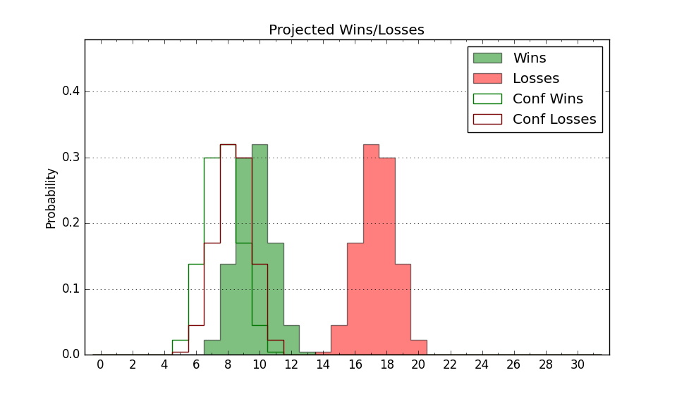

| Home | Game Probabilities | Conferences | Preseason Predictions | Odds Charts | NCAA Tournament |
| City: | Binghamton, New York | |
| Conference: | America East (5th)
| |
| Record: | 5-4 (Conf) 7-13 (Overall) | |
| Ratings: | Comp.: -15.3 (328th) Net: -15.6 (328th) Off: 94.6 (316th) Def: 110.2 (318th) SoR: 0.0 (157th) |
| Remaining | ||||||
|---|---|---|---|---|---|---|
| Date | Opponent | Win Prob | Pred. | |||
| 2/8 | @ New Hampshire (262) | 21.3% | L 60-68 | |||
| 2/11 | Albany (341) | 68.9% | W 73-67 | |||
| 2/15 | NJIT (322) | 62.7% | W 69-66 | |||
| 2/18 | @ UMass Lowell (146) | 9.1% | L 62-78 | |||
| 2/22 | @ Vermont (138) | 8.4% | L 58-74 | |||
| 2/25 | Maine (270) | 49.3% | L 68-69 | |||
| 2/28 | UMBC (241) | 44.1% | L 73-74 | |||
| Previous | Game Score | |||||
| Date | Opponent | Win Prob | Result | Off | Def | Net |
| 11/12 | @Marist (304) | 28.6% | W 78-75 | 20.0 | -3.5 | 16.5 |
| 11/15 | @Maryland (22) | 1.5% | L 52-76 | -6.3 | 10.1 | 3.8 |
| 11/19 | Sacred Heart (333) | 66.5% | L 60-75 | -17.1 | -10.3 | -27.3 |
| 11/23 | Columbia (339) | 68.8% | W 81-79 | 16.9 | -23.9 | -7.0 |
| 11/26 | @La Salle (256) | 20.6% | L 62-65 | -9.1 | 15.5 | 6.3 |
| 11/30 | Loyola MD (338) | 68.7% | L 70-84 | -2.0 | -25.8 | -27.8 |
| 12/3 | Stonehill (311) | 59.8% | L 66-69 | -12.6 | -8.1 | -20.7 |
| 12/7 | Colgate (119) | 20.1% | L 62-81 | -4.0 | -12.5 | -16.5 |
| 12/9 | @Fordham (157) | 9.8% | L 62-77 | -4.9 | 6.5 | 1.7 |
| 12/21 | @Niagara (229) | 17.1% | L 67-73 | 6.8 | -0.8 | 6.0 |
| 12/29 | @Cornell (107) | 5.9% | L 70-86 | 2.3 | -0.5 | 1.8 |
| 12/31 | @Bryant (187) | 11.9% | L 78-82 | 8.4 | 0.1 | 8.6 |
| 1/5 | New Hampshire (262) | 48.0% | W 68-50 | 6.7 | 16.1 | 22.8 |
| 1/11 | @NJIT (322) | 33.1% | W 72-71 | 4.5 | 5.5 | 10.0 |
| 1/14 | UMass Lowell (146) | 25.3% | W 66-65 | 3.6 | 12.3 | 16.0 |
| 1/19 | @Albany (341) | 39.4% | W 65-54 | 3.6 | 24.3 | 27.9 |
| 1/22 | @Maine (270) | 22.2% | L 57-78 | -10.1 | -8.0 | -18.1 |
| 1/25 | Vermont (138) | 23.8% | L 55-80 | -12.0 | -17.7 | -29.7 |
| 1/28 | Bryant (187) | 31.5% | W 84-67 | 16.6 | 9.1 | 25.7 |
| 2/1 | @UMBC (241) | 18.8% | L 55-69 | -15.3 | 7.6 | -7.7 |
| Stats & Trends | |||||
|---|---|---|---|---|---|
| Current | Day | Week | Month | Season | |
| Composite | -15.3 | +0.0 | +0.3 | +2.6 | -6.5 |
| Comp Rank | 328 | -- | +2 | +15 | -64 |
| Net Efficiency | -15.6 | +0.0 | +0.4 | +4.2 | -- |
| Net Rank | 328 | -- | +2 | +19 | -- |
| Off Efficiency | 94.6 | +0.0 | -0.1 | +0.1 | -- |
| Off Rank | 316 | -- | -1 | -21 | -- |
| Def Efficiency | 110.2 | +0.0 | +0.5 | +4.1 | -- |
| Def Rank | 318 | -- | +6 | +34 | -- |
| SoS Rank | 309 | +4 | +26 | +22 | -- |
| Exp. Wins | 9.6 | -0.0 | -0.1 | +2.5 | -2.9 |
| Exp. Conf Wins | 7.6 | -0.0 | -0.1 | +2.5 | -0.3 |
| Conf Champ Prob | 0.3 | -0.1 | -0.6 | +0.3 | -8.6 |

| Advanced Stats | ||
|---|---|---|
| Stat | Value | Rank |
| Off Eff FG % | 0.470 | 306 |
| Off Ast Ratio | 0.121 | 330 |
| Off ORB% | 0.248 | 239 |
| Off TO Rate | 0.175 | 300 |
| Off FT Ratio | 0.308 | 203 |
| Def Eff FG % | 0.521 | 239 |
| Def Ast Ratio | 0.131 | 85 |
| Def ORB% | 0.294 | 273 |
| Def TO Rate | 0.133 | 325 |
| Def FT Ratio | 0.377 | 308 |